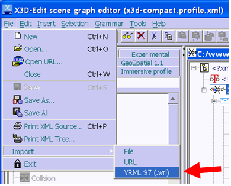
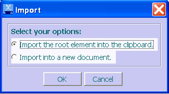
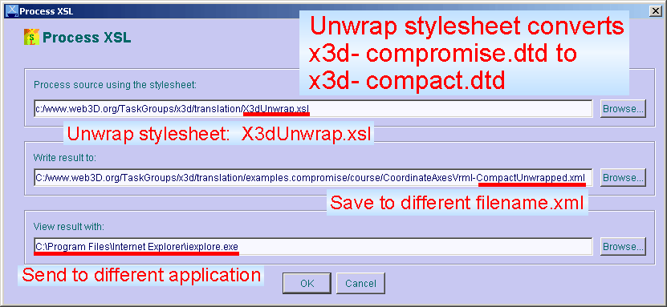
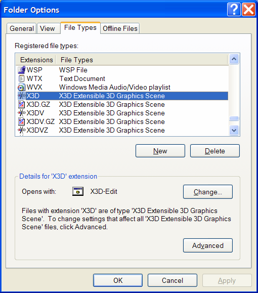
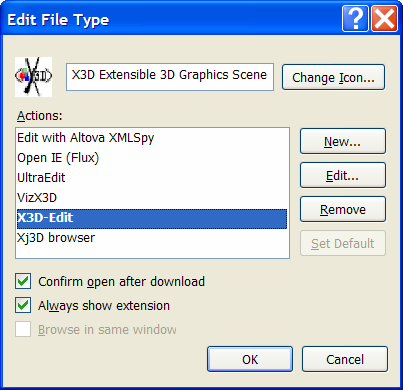
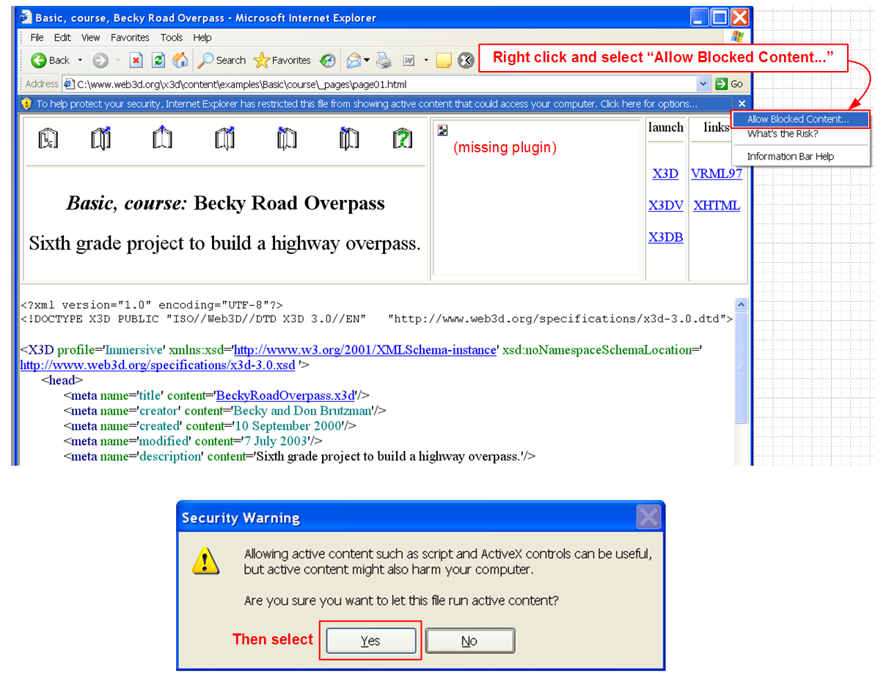
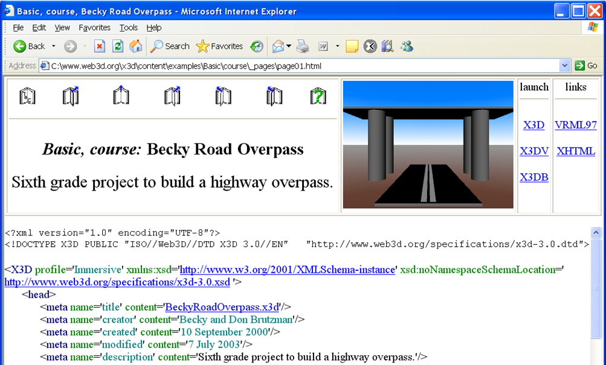
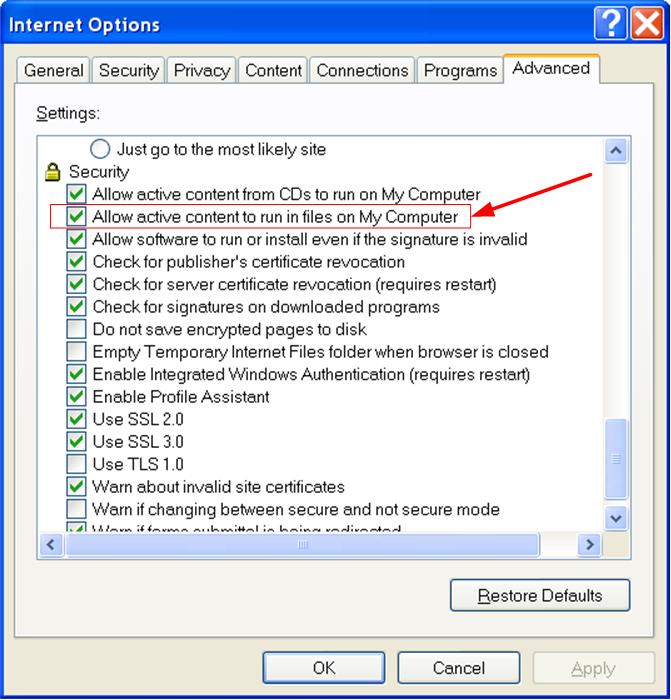
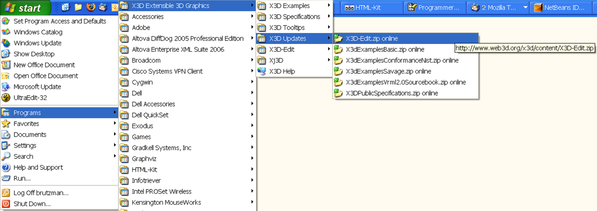

|
|
X3D-Edit for Extensible 3D (X3D) Graphics - README
|
|
 |
Don Brutzman
(brutzman at nps.navy.mil)
AutoInstaller |
Purpose |
Status |
Internationalization (i18n) |
Installation Setup |
Download Updates |
Features |
Details |
Usage |
Compact Form |
Developers |
Bugfixes
X3D-Edit is a graphics file editor for
Extensible 3D (X3D)
that enables simple error-free editing,
authoring and validation of X3D or VRML scene-graph files.
Context-sensitive tooltips provide concise summaries
of each VRML node and attribute. These tooltips simplify authoring and improve
understanding for novice and expert users alike.
X3D-Edit Auto Installer
is available online for various operating systems (Windows, Mac, Linux, Solaris and other Unix).
X3D-Edit uses the X3D 3.1 tagset defined by the
X3D 3.1 Document Type Definition (DTD)
in combination with Sun's
Java,
IBM's
Xeena XML editor,
and editor profile configuration files.
See
X3D Help for further X3D resources.
X3D-Edit implements the Extensible 3D (X3D)
tagset for the next-generation Virtual Reality Modeling Language (VRML 200x). X3D-Edit also exercises
various X3D graphics rendering and translation implementations.
Latest updates of software and examples: see build.date.X3D-Edit.txt.
Now version 3.1, matching
X3D 3.0 International Specification
(Summer 2004) and adding components from
X3D Amendment 1 (Winter 2005).
Completed v3.1 components:
- Updated x3d-3.1.dtd
- CAD component
- Programmable shaders component
- Cube map environmental texturing component
- LocalFog and FogCoordinate
- Texture3D component
- Miscellaneous updates
Also ongoing: testing
X3D Schema (x3d-3.1.xsd)
against
several thousand X3D examples
using a
project file
for
XML Spy.
Functional improvements:
- Web3D Specifications
for
Extensible 3D (X3D) Graphics,
Humanoid Animation (H-Anim)
and
the Virtual Reality Modeling Language (VRML 97)
are now included.
- X3D-Edit Authoring Tool for Extensible 3D (X3D) Graphics
provides a six-page summary of X3D-Edit features and usage.
Also available online:
Powerpoint slides
and
html slides.
This position paper was presented at the
ACM SIGGRAPH/Eurographics Campfire on Production Processes for 3D Computer Graphics Applications,
Snowbird Utah, June 2-4 2002.
- VRML Import capability for conversion to X3D, using the
NIST Vrml97ToX3d translator.
-
Select File then Import to get a file-dialog box:
-

-
Select a VRML file (SomeScene.wrl) from the file-dialog box:
-

-
Select option Clipoard or else New Document:
-

-
Now, depending on your choice, either paste from clipboard on top of an existing scene X3D node, or else select the newly created document.
Pasting into a new document on top of the X3D node is preferred because it has a proper DTD attached.
-
Important final step: Save As a new .x3d scene.
Otherwise you may get an obscure console message (
java.lang.StringIndexOutOfBoundsException: String index out of range: -1).
Further editing and VRML/HTML stylesheet outputs will now work.
- Tooltip support:
Chinese,
English,
French,
German,
Italian,
Portuguese
and
Spanish.
Work on additional translations is underway to further improve
Internationalization (i18n) support
for X3D tooltips.
- Three XSLT translation buttons now provided: Internet Explorer VRML, Netscape VRML, Internet Explorer HTML.
This makes it easier to test scenes in multiple browsers, and provides better support for DIS Profile which
only runs under Netscape security model.
- Added accessType (eventIn/eventOut/field/exposedField) information for all VRML 97 nodes.
- Now bundling the
NIST Vrml97ToX3d translator
in the x3d/content directory. This distribution now includes
Vrml97ToX3d.jar
and
Vrml97ToX3d.bat.
We have integrated this functionality as a VRML Import button in X3D-Edit.
- Updated support for
recent improvements
for the
Distributed Interactive Simulation (DIS)
profile.
- Attribute validation is now reported during stylesheet translation from X3D to VRML.
- A large set of detected errors and warnings are displayed in the status window.
- Numerous dependency checks reveal semantic errors with
Prototype,
Script,
field,
fieldValue,
ROUTE scoping
and
IS
constructs.
- Support for revised LatticeXvl (
XvlShell tag).
- HTML output has improved color coding, enabling better readability and manual annotation of
ROUTE
and
IS
relationships.
Internationalization (i18n):
- Tooltip pages are now available for
Chinese,
English,
French,
German,
Italian,
Portuguese
and
Spanish.
- The tooltip translations
are recorded using XML configuration files, meaning that our future
deliverables for VRML 200x/X3D can contain standards-based
internationalization (i18n) support.
- X3d-Edit-Chinese.bat launches X3D-Edit using tooltips in Chinese.
- X3d-Edit-French.bat launches X3D-Edit using tooltips in French.
- X3d-Edit-German.bat launches X3D-Edit using tooltips in German.
- X3d-Edit-Italian.bat launches X3D-Edit using tooltips in Italian.
- X3d-Edit-Spanish.bat launches X3D-Edit using tooltips in Spanish.
- Alternatively, modify your environment variable with
SET X3dLanguagePreference=Chinese
or
SET X3dLanguagePreference=French
or
SET X3dLanguagePreference=German
or
SET X3dLanguagePreference=Italian
or
SET X3dLanguagePreference=Spanish.
The regular X3D-Edit icons then execute en Français or en Español etc.
- X3d-Edit-English.bat launches X3D-Edit using tooltips in English (overriding any other preference setting).
- Many thanks to our translators.
-
Editor profile configuration files:
- Of interest:
World Wide Web Consortium (W3C) Internationalization (i18n)
- Candidate translators: please
subscribe
and advise
www-vrml@web3d.org
of your intentions so we can avoid duplication of effort. There is plenty of good work to share!
- Translators (and authors) please note that any special characters need to be translated into
"character entities" which are well described in the
HTML 4.01 Recommendation,
chapter 24 "Character entity references in HTML 4,"
http://www.w3.org/TR/html4/sgml/entities.html
- Upcoming work: place all tooltips under CVS control for better maintenance.
- Upcoming work: integrate tooltips with X3D Schema.
- Other language translations are welcome. Please contact
Don Brutzman (brutzman at nps.navy.mil)
for further details about how to volunteer - you'll be in good company.
"How are tools put together" diagram:
XML Tool Relationships for X3D.
Education:
We're using X3D-Edit to teach a
VRML/X3D course.
Reducing content bugs and eliminating the syntax idiosyncracies of VRML really helps!
Using the beta version January-March 2000, we got
through the material in the
VRML 2.0 Sourcebook
one week faster than in previous versions of this course.
We are making similarly excellent progress using the current version of X3D-Edit.
X3D versions of sourcebook examples (270 total!) are available on the
X3D Examples for Vrml 2.0 Sourcebook
site.
Suggestions
and improvements regarding X3D-Edit installation/usability are welcome.
Discussion of this tool occurs on the
www-vrml mail list.
Additional instructions for Mac are available in
README.X3D-Edit.Mac.txt
thanks to the ever mac-nificent
Steve Guynup
(guynups@gra.com)
You will need to be logged in with administrator permissions to perform some of these installations.
Recommended installation: AutoInstaller.
X3D-Edit AutoInstaller
for various operating systems (Windows, Mac, Linux, Unix/Solaris).
Once installed, and once you have a VRML plugin (step 1 which follows), you can
update to new revisions by skipping ahead to step 7
and simply extracting the updates on top.
If you prefer to install X3D-Edit manually, follow steps 1-6 instead of using the autoinstaller.
-
Install one of these free Virtual Reality Modeling Language (VRML) plugins in your web browsers.
These plugins can work with any combination of
Netscape
and
Internet Explorer.

|
To see if your VRML-browser installation worked,
try viewing the
HelloWorld.wrl example scene.
|
-
Install Java
using one of the
online distributions.
(Java is needed in order to run the Xeena tool.)
When installing, you will need to acknowledge the nonrestrictive Java license.
You might save a download if Java is is already installed.
You can test whether Java is installed by opening a
command window and typing
c:\> java -version
-
Download and install Xeena from IBM Alphaworks
http://www.alphaWorks.ibm.com/tech/xeena (~5MB).
Make sure that you retrieve version 1.2EA, not version 1.1.
Xeena is used to build to the X3D-Edit tool.
- You need to acknowledge the nonrestrictive licenses.
- It is best to stick with the default installation
C:\IBM\Xeena subdirectory.
- When Xeena asks for which version of Java to use, select
Java 2 (Runtime Environment or SDK).
- Then point the installer to the destination directory where you installed Java
(typically
C:\jdk1.3.1,
not C:\jdk1.3.1\bin).
You might also find the JRE installed in a directory like
C:\Program Files\JavaSoft\JRE\1.3.1_09
- No "proxy host" entry is needed, this is for use behind restrictive firewalls.
- Default values on other entries work fine.
- Go ahead and view the example "addressbook" example.
If you get an "Out of environment space" error, see the
bugfix below.
-
Once installed,
Xeena details can be found on the
Help (user guide) page,
installation README page,
and
Frequently Asked Questions (FAQ)
pages.
-
Once installed,
test installation by running the
Xeena AddressBook DTD Example.
-
If you need an unzip program, get
PKZIP (from
http://www.pkware.com).
Make sure your unzip program's preferences
install the zip into your top-level directory on C:\
and preserve all subdirectory folder names
(the X3D-Edit code unravels/merges everything into C:\www.web3d.org\x3d\content\* )
You can also unzip a zipfile using Java as follows. Be sure to run this from your topmost (root) subdirectory.
C:\> jar -xvf X3D-Edit.zip
-
For GeoVRML extension support, you may need to also
install GeoVRML.
-
For DIS-Java-VRML extension support, you may need to also
install DIS-Java-VRML.
-
Download the X3D-Edit distribution (~30 MB) from
http://www.web3d.org/x3d/content/X3D-Edit.zip
-
Recommended installation:
download the
X3dExamples distributions
Unzip from your top-level directory as follows:
C:\> jar -xvf X3D-Examples.zip
Again, make sure your unzip preferences preserve the subdirectory folder names and
install the zip into your top-level directory on C:\
(it unravels into C:\www.web3d.org\x3d\content\* )
The
X3D Examples
are also viewable online at
http://www.web3d.org/x3d/content/examples and
http://www.web3d.org/x3d/content/examples/Vrml2.0Sourcebook.
-
Recommended installation:
download the ConformanceNist Examples distribution (~150 MB) from
http://www.web3d.org/x3d/content/examples/ConformanceNistSuite.zip
The
ConformanceNist Examples
are also viewable online at
http://www.web3d.org/x3d/content/examples/ConformanceNist.
Unzip from your top-level directory as follows:
C:\> jar -xvf ConformanceNistExamples.zip
- All done!
- Intuitive, powerful user interface
- Always creates well-formed scene graphs: nodes only fit where allowed
- Validates X3D scenes for VRML 97 profile and Core profile
- Automatically translate X3D scene into VRML and launch browser to view results
- A huge set of example X3D scenes
- Tool tips and hints pop up for each element and attribute, helping you learn how VRML/X3D scene graphs really work
- Platform independence using Java
- Extensible Style Sheet for Transformations (XSLT) translation:
X3dToVrml97.xslt (backwards compatibility with VRML 97),
X3dToXhtml.xslt (tagset pretty printing), and
X3dWrap.xsl / X3dUnwrap.xsl
(for "wrapper tag" addition/removal)
- Support for
DIS-Java-VRML
extension nodes, specified by the
DIS-Java-VRML Working Group
(http://www.web3d.org/WorkingGroups/vrtp/dis-java-vrml)
with ongoing design testing & evaluation.
- Support for editing georeferenced
GeoVRML nodes,
specified by the
GeoVRML 1.0 profile
(http://www.geovrml.org/1.0/doc).
- Support for draft
H-Anim 2001 Humanoid Animation Specification
and editing avatar
Humanoid Animation nodes.
Also support for
H-Anim 1.1 profile
(http://ece.uwaterloo.ca:80/~h-anim/spec1.1)
- Support for proposed new nodes
KeySensor
and
StringSensor.
However, note that Prototype support is not yet implemented for keyboard nodes.
- Support for proposed
Non-Uniform Rational B-Spline (NURBS) Surface
extension nodes, proposed by
blaxxun interactive
with ongoing development & evaluation.
However, note that complete Prototype support is not yet implemented for Nurbs nodes.
- Scene graph printing using tags or icons (on some printers, anyway... this Xeena feature is buggy)
X3D-Edit uses the compact XML tagset defined by the X3D Compact Document Type Definition (DTD)
version3.0 with
- Versions
-
X3D-Edit Version 3.0
X3D Draft International Specification.
Modifications described in the
x3d-dtd-changelog.txt.
-
X3D-Edit Version 2.4
includes
DTD renumbering to 3.0 for final testing of the
X3D Final Committee Draft (FCD) Specification.
Version 2.4 also includes several significant tagset changes:
ProtoInterface/ProtoBody, containerField,
fields with accessType inputOnly/outputOnly cannot be set,
plus further strict X3dToVrml97.xslt conversion validity checks.
-
X3D-Edit Version 2.3
includes addition of Geometry2D, MultiTexture and Event Utility nodes,
plus significant tagset changes to IS/connect, field/fieldValue USE, type and accessType renames, etc.
-
X3D-Edit Version 2.2
includes
VRML Import capabiltity.
-
X3D-Edit Version 2.1
includes
- more compact tagset:
<proxy> eliminated while
attribute containerField denotes default parent-child relationship names,
<proxy> node illegal (employ USE="nameTargetDEF" attribute instead).
- Global 'class' attribute reserved for future use by XML Cascading Style Sheets (CSS), similar to HTML stylesheet use.
- IMPORT/EXPORT experimental support provided for routing values into and out of Inline nodes.
<USE> element no longer allowed, due to lack of type checking on node and attribute values, as well as redundant functionality.
Utilize @USE attributes instead, for example <Shape USE="MyShapeNode"/>
X3D-Edit uses the
Xeena 1.2 EA release.
-
X3D-Edit Version 2.0
includes changes to nodeType and accessType attributes,
as well as
validation of attribute values.
-
X3D-Edit Version 1.8
includes changes to the header tagset.
-
X3D-Edit Version 1.7
includes DIS-Java-VRML, GeoVRML and H-Anim node support.
Now using the
x3d-compact.dtd
tagset (no wrapper tags).
- Version 1.6 corresponds to x3d-compromise.dtd (October 2000) + full Sourcebook examples, KeySensor + StringSensor + NURBS.
This version and corresponding examples both use the
x3d-compromise.dtd
with wrapper tags. Available at
X3D-Edit-1.6.zip
with
X3D-Examples-1.6.zip.
- Version 1.5 corresponds to x3d-compromise.dtd (September 2000) + GeoSpatial + H-Anim + DIS-Java-VRML + extensions
- Version 1.4 corresponds to x3d-compromise.dtd (July 2000) + extensions
- Version 1.3 corresponds to x3d-compromise.dtd (May 2000)
- Version 1.2 corresponds to x3d-compromise.dtd (April 2000)
- Version 1.1 corresponds to x3d-draft.dtd (February 2000)
- Original release: 1 November 1999
- Author
-
Don Brutzman
brutzman at nps.navy.mil
- Distribution
- http://www.web3d.org/x3d/content/X3D-Edit.zip
- Example content
- X3D-Edit is a thoroughly tested tool.
X3D-Edit has been used to author a diverse set of X3D/VRML scenes as follows.
- Examples help
- http://www.web3d.org/x3d/content/examples
- http://www.web3d.org/x3d/content/examples/Vrml2.0Sourcebook
- http://www.web3d.org/x3d/content/examples/ConformanceNist
- http://savage.nps.edu/Savage
- Screen snapshots
- X3D-EditSampleScreenSnapshot.png user interface
- examples/GeoSpatial/newGeoSpatialScene.png GeoVRML nodes
- examples/HumanoidAnimation/NancyNativeTags.png Humanoid Animation nodes
- Icon summary diagrams
- IconSheet-1.pdf,
IconSheet-2.pdf,
IconSheet-3.pdf,
IconSheet-4.pdf
- Licensing
- X3D-Edit files are open-source public-domain products from the X3D
Task Group.
- The nonrestrictive Sun
license for Java
and the nonrestrictive IBM license for
Xeena
are provided when downloading/installing each of those tools.
- IBM
has generously agreed to allow the
Web3D Consortium
include
Xeena on the
Web3D/X3D
Software Development Kit (SDK).
-
Launch icons for
X3D-Edit
are placed on the Windows 95, 98, NT and 2000 desktops.
A copy of the
X3D-Edit
launch icon is also available in the
C:\www.web3d.org\x3d\content
subdirectory.
-
Windows shell invocation:
D:> C:
C:> cd \www.web3d.org\x3d\content
C:\www.web3d.org\x3d\content> X3D-Edit.bat
-
Unix shell invocation:
% source x3d-edit.sh
-
Xeena details.
Good things still worth checking out:
local copy of the
installation README
helps troubleshoot installation problems.
You can learn all about the user interface by reading the
Help (user guide).
Anything else might be found on the
Frequently Asked Questions (FAQ)
page.
This section no longer pertains to the current version of X3D.
You can safely ignore it, documentation of the compact and compromise forms is retained for archival purposes only.
You can easily simplify legacy content to remove "wrapper tags"
(<children> <appearance> <geometry> etc.) by using X3dUnwrap.
This also lets you upgrade to X3D-Edit version 1.7 from earlier versions.
Select Tools then Process XSL from the top menu.
Use the X3dUnwrap.xsl stylesheet as shown to unwrap your scene.
Backing up your original file (or saving to a different filename) is a good idea.
The Process XSL window can be stretched left-right for easier reading.

The stylesheet also updates the tagset document type definition (DTD) from
x3d-compromise.dtd
to
x3d-compact.dtd.
Example screen snapshots show
"before" (compromise wrapper tags, X3D-Edit version 1.6)
and
"after" (compact unwrapped, X3D-Edit version 1.7)
scene graphs.
Some miniscule detail about this project follows.
This is primarily for documentation purposes and is not needed for regular use.
Alternate Usage for Developers
Besides X3D-Edit.bat, example Xeena editor invocations under Windows follow.
Edit to match your your locally installed subdirectories as needed.
C:\ibm\Xeena> xeena.bat -dtd c:\www.web3d.org\x3d\content\x3d-compromise.dtd -root X3D
C:\ibm\Xeena> xeena.bat -dtd c:\www.web3d.org\x3d\content\x3d-compromise.dtd -root X3D -xml c:\www.web3d.org\x3d\content\examples\AllVrml97Nodes.xml
There are many example invocations and shortcuts in the
Makefile.
Alternate Installation Directory
Not recommended (which means "skip this section").
If you insist on changing the installation directory (!)
then you will need to edit the second line (DOCTYPE) of
x3d-compromise.dtd,
and you will also need to edit the following files:
x3d-compromise.profile.X3D-Edit-1.6,
x3d-compromise.profile,
X3D-Edit-1.6.bat,
X3D-Edit.bat and
Makefile (if used)
to match your local directory structure.
You will likely have to edit the examples as well, though if you are connected to the network,
Xeena will try to find the website version of the DTD.
XSL Stylesheets and Translation Utilities
Many bugs are avoided altogether (especially Windows ME and 98) by using the
X3D-Edit Auto Installer
for various operating systems (Windows, Mac, Linux, Unix/Solaris).
0. X3D-Edit can't open example scenes due to being disconnected from the network.
The underlying Xeena tool can't be modified to substitute local DTDs for online DTDs, causing a validation error when opening most scenes when offline.
The best correction to this problem is simply to connect to the network.
- Windows workaround #1: open X3D scenes one at a time by invoking X3D-Edit via the command line. Example:
C:\www.web3d.org\x3d\content>x3d-edit examples\HelloWorld.x3d
Example console output shows normal X3D-Edit operation.
A normal program exit allows the executing batch file to convert the DOCTYPE back to final form.
- Windows workaround #2: open X3D scenes one at a time by clicking on them from Windows Explorer.
Configure Windows Explorer to recognize .x3d files via the Tools menu, selecting Folder Options and entering the .x3d file type as follows.
 Tools -> Folder Options -> X3D"/>

- Java-based workaround #3: use the
X3dDtdChecker tool
to convert DTD references.
- Manual workaround #4: refer to the X3D Scene Authoring Hints
and use a text editor to manually change the DOCTYPE.
1. Xeena/X3D-Edit works under JDK 1.4, except for the "Allowed Nodes" pane.
Workarounds: use the other panes,
install the
X3D-Edit Auto Installer version,
or supplement JDK 1.4 with
JDK 1.3.1_09
instead.
2. A common installation problem follows.
This can occur under Windows 95, Windows 98 or Windows Millenium (ME).
The fix is the same either way.
] If you're running Windows 95/98/ME, and encounter an "Out of environment space"
] error, then you'll need to increase the size of the environment table.
] You can do this at the command line (which is temporary) or by editing
] a configuration file to make a permanent change (which requires restarting
] your computer).
]
] To temporarily increase environment space for X3D-Edit.bat,
] first enter the following command at the DOS prompt:
]
] C:\www.web3d.org\x3d\content> command /e:8192
]
] C:\www.web3d.org\x3d\content> X3D-Edit
]
] To permanently increase environment space,
] add the following line to your C:\CONFIG.SYS file,
] save all files, and then restart (reboot) your system:
]
] shell=command.com /e:8192 /p
]
] Once you've increased the size of the environment table,
] try running Xeena again. If there is still a problem,
] please cut/paste the command-window text into an email and
] report the problem.
Alternative for Windows Millenium (ME) from Tom Greenwald, NPS.
] For both Xeena and X3D-Edit I had to right click on the icon, left click
] on properties, click the memory tab, set the initial environment to
] 4096, set extended (XMS) memory to 8192, and set MS-DOS protected mode
] (DPMI) memory to 8192.
You may need to reboot your computer for these changes to take effect.
You will also have to repeat this step whenever you update X3D-Edit, so you
may prefer the permanent change above.
3. If you use the older version 1.1 of Xeena (instead of 1.2EA), the following errors appear:
C:\www.web3d.org\x3d\content>c:\ibm\Xeena\xeena.bat
-dtd "c:\www.web3d.org\x3d\content\x3d-compromise.dtd"
-root X3D
-xml "c:\www.web3d.org\x3d\content\examples\newScene.xml"
Syntax error
Syntax error
running Xeena with Java 2
Exception in thread "main" java.lang.NoClassDefFoundError:
com/ibm/hrl/xmleditor/Xeena
To fix this problem: uninstall Xeeena 1.1,
install
Xeena 1.2 EA,
and again extract
X3D-Edit.zip
(to correct the Xeena CLASSPATH bug).
Or simply uninstall X3D-Edit and use the
autoinstaller
instead.
4. After importing a VRML97 scene, the XSL buttons do not work.
The following obscure message may appear in the console:
java.lang.StringIndexOutOfBoundsException: String index out of range: -1
Fix: save the imported scene as a file.
This may require renaming your scene if it was originally a read-only file (such as newScene.x3d).
The XSL buttons now work.
See above for more instructions on using the
VRML97 Import capability.
5. Insufficient memory.
You will need 128MB of RAM or more. Yes, 128.
6. The window goes blank and locks up before displaying a scene.
This is likely a
DOCTYPE/DTD problem:
Xeena is attempting to retrieve the DOCTYPE/DTD via the network,
without success.
When using Java 1.3 or earlier, this problem can only be fixed by
replacing the DOCTYPE/DTD or else by connecting to the network, thus gaining access to the final DTD url.
Fixes and workarounds:
- upgrade to
Java 1.4, 1.5
or later
so that
X3dDtdChecker.java
can fix this problem at launch time (drag/drop or clicking on file icon)
- connect to the network for X3D scenes using the final X3D DOCTYPE/DTD
- manually edit the scene first (in another XML/text editor) to use the X3D Transitional DTD.
See the
X3D Scene Authoring Hints
for further details on DOCTYPE.
7. You want to use an http proxy server.
The http proxy server feature is for loading a file via the Web. Not a very common setting, but nice to have nevertheless.
You will need to uncomment and update the line in X3D-Edit's modified
C:\IBM\Xeena\Xeena.bat
for
set PROXY_SETTINGS. Warning: we've had trouble with this feature under Windows 98.
8. Some developers might not have Make installed...
Make is not necessary to run X3D-Edit, it is only used for X3D-Edit source development.
The Makefile is being replaced by an Ant build file.
Make is available
via the Cygnus distribution of GNU Utilities for PCs at
http://sourceware.cygnus.com/cygwin.
The Cygwin distribution provides Unix command line and utilities on Windows 95/98/NT/2000.
Don't forget to upgrade your PATH with something like
C:\cygnus\cygwin-b20\H-i586-cygwin32\bin;.
Once Make is installed, edit the Makefile filename/directory
definitions to match your local installation.
There are a bunch of alternate example invocations in the Makefile
if you know how to grok Make.
9. X3D-Edit can't seem to find the correct version of Java.
Set the JAVA_HOME environment variable
to the installation directory for Java on your system and X3D-Edit will use Java accordingly.
10. No X3D scene appears in the browser.
Install a VRML or X3D plugin
in your Web browser.
11. Internet Explorer (IE) blocks viewing the 3D scene.
The following screen snapshots illustrate this problem and 2 solutions.
When the plugin is blocked from showing content, the following warning bar appears near the top of the browser.
Right click and select "Allow blocked content..." then select "Yes" to confirm.

Correct integration of the plugin then appears:

You can permanently reset this permission by selecting Internet Explorer -> Tools -> Internet Options... -> Advanced
and then under Security select "Allow active content to run in files on My Computer" as follows:

Similar selections can be made for automatically running content from a CD, over the Internet, etc.
12. How do I quickly update X3D-Edit and examples?
Menu shortcuts are provided under windows to easily retrieve updates.
Always extract all .zip files to the C:\ root directory.

13. IBM Haifa was very attentive in responding to bug reports
regarding Xeena, the interface tool.
Unfortunately, despite the popularity of Xeena, their team is no longer working on this tool.
We hope to fix known Xeena bugs someday.
Nevertheless it still usually works fine for X3D-Edit.
Revised: 7 March 2007
Maintained by
Don Brutzman
(brutzman at nps.navy.mil)
This page is available online at
http://www.web3d.org/x3d/content/README.X3D-Edit.html
{kind=link}
{kind=link}
{kind=link}
{kind=link}